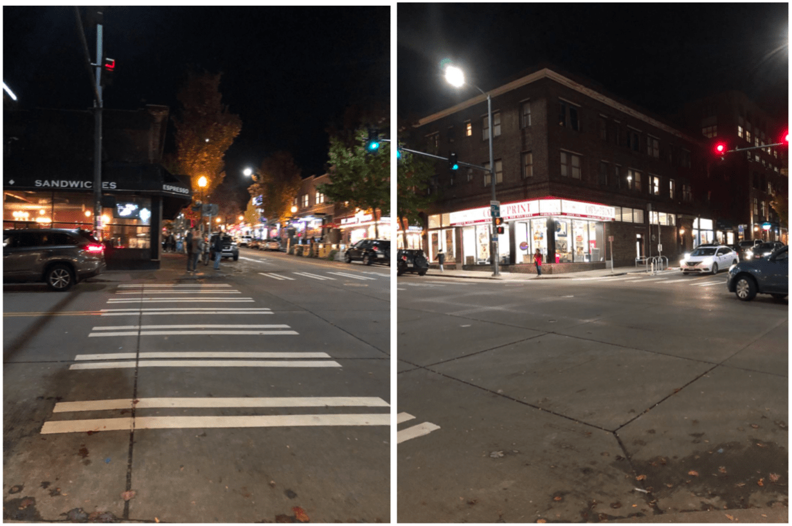
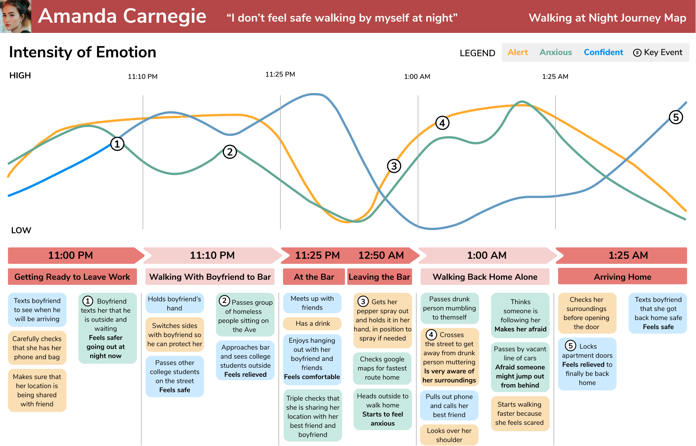
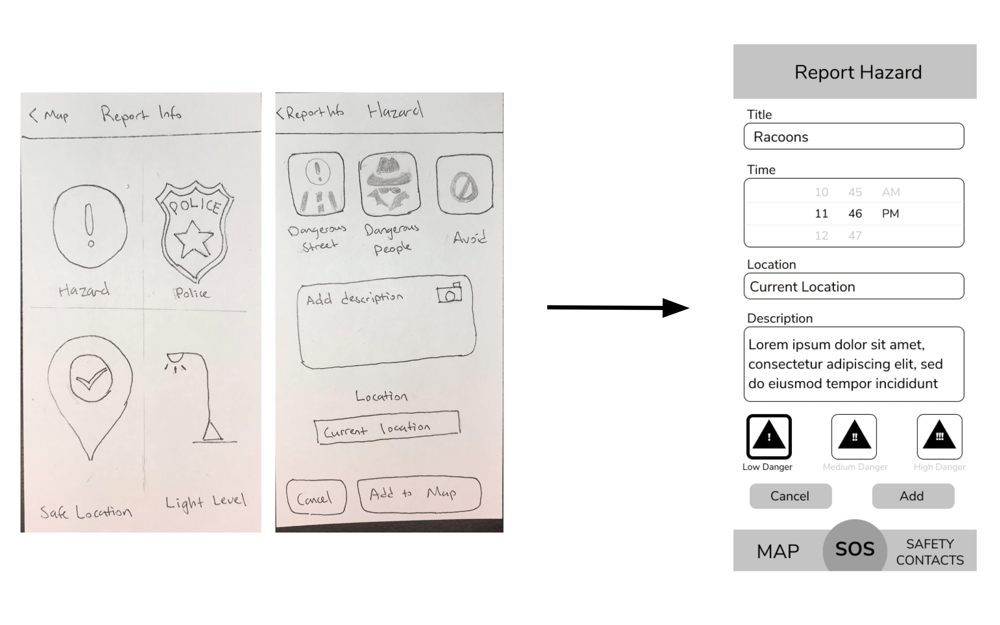
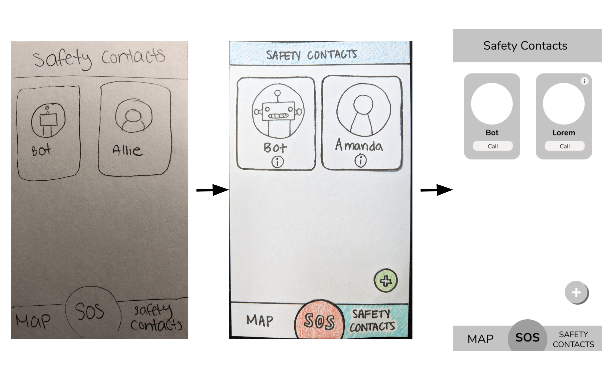
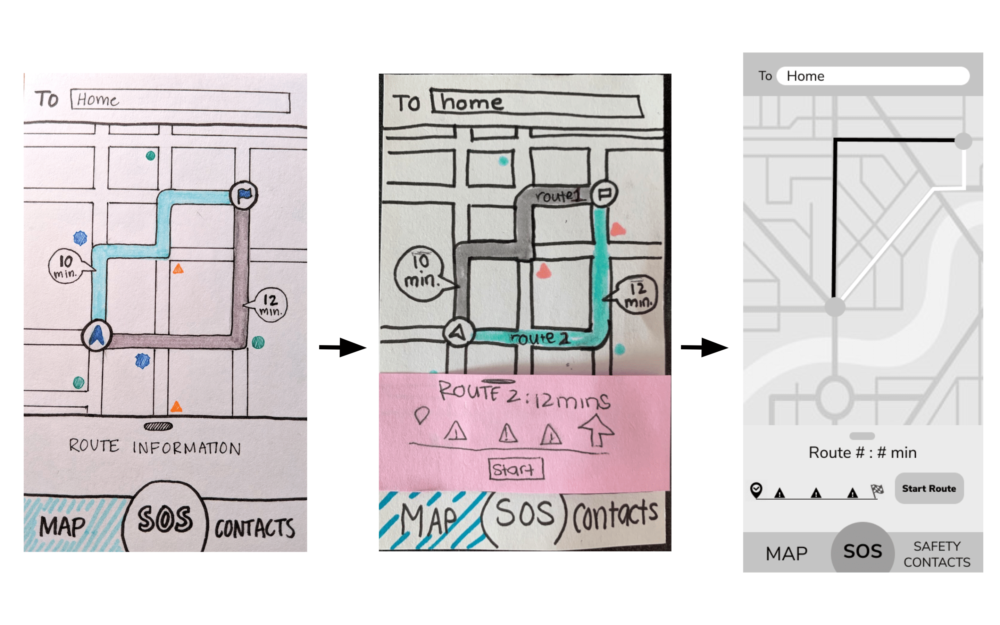
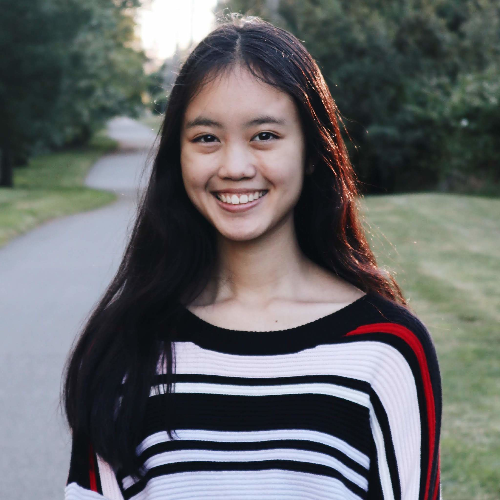
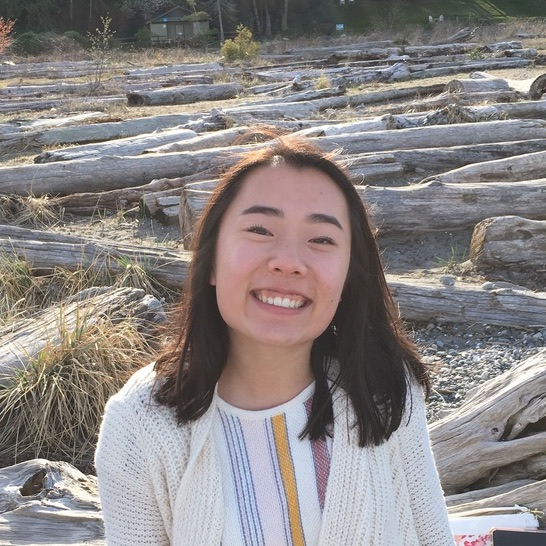

This project spanned 11 weeks in our HCDE 318 (Introduction to User
Centered Design) course, in Autumn 2019. As a team of 4, we applied
the user centered design process to the problem area of the danger
of walking alone at night for students. The process culminated in a
mobile application called NightOwl that gives students confidence and
control when walking alone at night.
Our research consisted of three different methods: semi-structured
interview, “fly on the wall” observation, and competitive analysis.
Through these methods, we learned more about our user group and their
goals and pain points as well as other products already on the market.
Each team member conducted a one-on-one interview with a student at the
University of Washington that walks during dusk or at night at least
4 times a month. We then regrouped and synthesized our findings into
key takeaways that would help us define our problem space and user group.
Key Takeaways
- They felt more comfortable talking with a friend on the phone when walking alone
- Walking home alone is unavoidable
- They know about UW safety, but doesn’t know how it works
Next, as a team we performed a “fly on the wall” observation on the Ave.
The goal of this study was to observe and investigate the actions and
behaviors of students walking in the U District at night.

Key Findings
- Users were interacting with their phone in some way
- Users walking alone didn’t seem scared
- Users were more alert when they passed homeless people
Each team member conducted one competitive analysis on an existing safety
app. This allowed us to understand how existing products on the market meet
users’ needs and how they could be improved. We analyzed the apps BSafe,
Circle of 6, Sekura, and Noonlight. Overall, the apps all had streamlined
designs that generally made users feel safe, but also had shortcomings
such as confusing features and allowing users to easily trigger emergency
services on accident. We used this information to seek opportunities,
inspire our designs, and learn what to avoid.
From our interviews, we gathered key insights on our users that we
compiled into categories such pain points, desires, and goals. These
helped us create personas grounded in data in order to avoid stereotypes
and assumptions. We chose to create two personas: one that was more
experienced with the UDistrict area and one that was only semi-familiar
with the area. This let us understand different user perspectives. Our
personas were a home base that we frequently visited to realign our
product and goals to our users’ needs.
Our user journey maps represent the experiences of Amanda and Mallory, two of our users,
while walking home at night. We captured key touch points between her and her environment
and emotions throughout her walk home. We focused on anxiety, alertness, and confidence as
the emotions we wanted to track, because they were the most prevalent emotions of our interviewees.
This journey map helped us understand our user’s feelings and interactions while walking home..

Design Requirements
After better understanding our users and problem space through research,
we defined design requirements that outlined the functions of our application.
These requirements ensured that our solution solved user pain points
and satisfied their goals. In addition, they helped us decide to focus on
creating a phone app as our final product because it would be able to
fulfill the requirements. This would also be convenient for our users
since we observed that many of them interacted with their phone in some
way while walking at night.
Each team member created two storyboards: one sketched and one photo or
photo hybrid. Each storyboard showed a specific scenario of our user
interacting with our potential product. It helped us visualize how our
user would interact with our potential solution. We chose to have each team
member focus on different user scenarios in order for us to understand the
full picture of the interactions between the user and our product from
the start to end of their walk.
Information Architecture
After deciding to make an app as our product, we started brainstorming
key features that would be the most helpful to our users. We utilized our
design requirements and user personas when ideating the app’s features and
how users would go through a specific task. Overall, our
information architecture showed the relationships and flows between
each feature. This set us up for success as we started ideating and
creating paper prototypes of our app screens.
The paper prototypes were a quick, easy way to test our designed features
without distracting users with colors and photos. They helped us
pinpoint confusing and unintuitive aspects of our initial features,
which we incorporated into our redesign. First, we each individually
sketched and described three interfaces. Then, we came back together
and combined our rough draft sketches into consistent interface sketches
for our usability tests. Based on our storyboards and information
architecture diagram, we defined three key tasks that we asked users
to complete in our tests.
Task 1: User searches for a final destination, which will be home.
Then they will select the path that they want to take and start their
route.
Task 2: User reports a burglary incident and inputs the correct
information (date, time, description) and submits it. After submitting,
check that it was successfully added to the map.
Task 3: User adds new safety contact and then calls them.
Try out these tasks with our virtual paper prototype
Participants: We tested our prototype with four female University of
Washington students who walk alone at night at least once a week.
Method: For each evaluation, we followed three major phases of testing in order to cohesively gather quality information about our users and our app. The first phase started off with an interview with each participant in order to gather basic demographic information. The second phase consisted of the main usability testing by providing users with a task that they had to accomplish while observers recorded notes. During the test, we asked participants to think out loud so that we could better understand their thought process and pain points. To make it seem like a real application, we used a Marvel App to conduct our usability testing. Lastly, we performed a post test interview to get final details of what participants thought of their experience of our solution to night safety.
After individually completing our usability tests, we came back together to synthesize and analyze our findings. We found commonalities in the features users struggled with, strengths and weaknesses of our design, and suggestions for redesign.
Key Findings:
- Users wanted to be able to share their location even when they hadn't started a path.
- Users did not expect the app to immediately call a contact after clicking on their contact tile.
- Users want to be able to quickly input information when reporting a hazard.
- Users stated that hazards have different urgency levels, which should be reflected in the app.
Based on our findings from our usability tests we made some changes to our designs.
Below are the three main changes that we made based on user feedback.
Report a Hazard Screen

Having different icon categories and hazard types was confusing, but users
still wanted hazards to be differentiated in some way. We made a few
changes based on this feedback:
- Removed different icon types and only allowed users to report hazards
- Removed hazard types
- Allowed users to enter a title for the hazard
- Added hazard levels (low, medium, and high danger)
Calling Safety Contact Screen

When users tapped on a contact, they expected to be taken to an editing page instead of it calling them, so we:
- Added a “call” button so that users would know that tapping it would immediately call the contact
- Tapping on the contact’s picture would bring them to the editing page
Select Route Screen

We made a few minor changes to this screen to alleviate confusion:
- Added “start route” button to collapsed menu
- Moved “start route” button to the side
- Added “From” text field at the top
Annotated Wire Frames
Also based on our usability testing feedback, we redesigned and
added aspects to our wireframes. Then, looking back at our information
architecture, we created the app's full functionality in Figma. These
wireframes were supposed to be low fidelity without color and real
text in order to strictly communicate the app’s features. We annotated
each screen to highlight key components and describe functionality.
This step helped us think about how our features worked together and
was a useful way to get feedback before designing our high fidelity
prototypes.
High Fidelity Prototype
Based on all our research and testing, we created an app called NightOwl,
that students could use to feel safe when walking alone at night.
The app has two main components: safety circle and map.
In the safety circle, based on interviewees stating they feel
comfortable when they’re walking and talking to their friend,
users are able to quickly and easily call their friends. If their
friends are busy, users can call the bot. The bot will record and
talk to them, mimicking a ‘friend’ listening to you in case your
are in a dangerous situation.
On the map, users can select a destination and the safest path to get
there. Once the user starts their route, their safety contacts will be
alerted and the app will automatically send another notification when
the user gets to their final destination; this happens automatically
because it’s easy to forget to let your friends know you got home safe.
To keep the incidents up to date on the map, we use crowdsourcing;
users can report and confirm hazards.
After user feedback, we made
the SOS button be easily clickable, which brings up a popup that
counts down from 5 seconds and then calls 911. If the user accidently
pressed the SOS button, they can easily cancel it. But we learned
that it’s important the SOS button be very quick to use in case
of a dire situation.
For our colors, we chose dark mode because users would be using this
app at night, so we wanted the screen to be subdued. Our color scheme
is dark blue, bright orange, and bright red. It is important to create
high contrast to show key information. Orange represents important
actionable items such as reporting a hazard and starting route.
The bright red is used only for the SOS button to ensure it stands
out in case of emergency.
Overall, this project was challenging and definitely stretched our
thinking in both design and teamwork. Working with a group to create
a high-fidelity mockup for a product in just 11 weeks was difficult
and required hard work from everyone. We learned that designing with a
team requires clear and effective communication, compromise, and a lot
of dedication. With that being said, we’re all proud of our final product
and enjoyed every step of the design process.
Outline of what we would do differently/with more time:
- More user research and usability testing
- Explore optimizing map pathfinding for users going between the
same two places multiple times a week
If we had more time, we definitely would have conducted more user research
and usability testing. Specifically, it would have been useful to do
competitive analysis on other technologies and services rather than just
apps. Also, although a phone app fit our design requirements,
we didn’t have much time to think about alternative forms of our
final product. We definitely would’ve wanted to explore other options,
especially since our user group of students walking at night should
actually be discouraged from using their phones.
In addition, there were parts of our app that we want to test more
because we are unsure of their effectiveness or usefulness. One of
these functions is the SOS button; we had gotten a lot of feedback about
how to make it easily accessible while not making it easy to accidentally
trigger. Based on user feedback, we were able to incorporate a solution
into our final design, but we would want to test with more users. However,
it was difficult to actually test the true functionality of the SOS
button because it’s meant to be used in emergency situations. Another
feature that we were unsure about was the ability to call a Bot. Some of
our users said that they would feel weird talking to a Bot and wouldn’t
use it, while some said they would. With more time, we would’ve wanted
to figure out how to make this feature truly useful to our users.
One really interesting question we received was about our research
into how often our users were going between the same two points every
week, and how we can optimize our map function to those users. This
question was very thought-provoking; since one of our features was
pathfinding on a map, we immediately turned to pre-existing solutions
(e.g. Google Maps, Apple Maps) as a base. However,
these solutions are made to deal with someone starting
from anywhere and going to anywhere. Dealing with the situation of
users going between the same two points multiple times a week might
result in a completely different solution. If we had the time, we would
want to explore optimization for this specific situation.
Finally, here are some key takeaways from each of us:
Maya: At the end of the project, I was surprised by how much a
“final” design can still be improved. It was a little disheartening
seeing how much critique our (almost) final design received, but when
I thought about it, pretty much every design in the world can be improved
in some way.
Lia: I learned how to optimize time and create quality work
by understanding and using each team mate’s skills and passions.
At different steps in our process, each one of us went above and
beyond to help the project excel.
Peter: Overall, this experience from start to finish has been memorable.
I enjoyed collaborating with my teammates as we each had important
contributions to NightOwl. As for the project itself, we may have
finished the first iteration of the high fidelity prototype, but there is
still much improvements we can make, especially after our final critique.
Valerie: This has been one of the most incredible design experiences
I have had. I love working in groups to design artifacts rather than trying to design
something complex like NightOwl on your own. I loved watching our project grow as we
shared ideas and made compromises about our designs. Each member of the team brought
something very unique to the table, and although it was challenging to incorporate what worked
best for all of us, it was in this diversity of the designers in our group that we were able
to produce a product that we are all proud of.
Meet Our Team

Maya Sioson
I’m a junior studying Human Centered Design and Engineering. I’m particularly interested in data
science and data visualizations! I believe that data visualizations
are powerful tools for catalyzing social good.
Valerie Remaker
I am a junior at the UW with an interest in Human Computer Interaction.
I enjoy Web Development and Design. I am a TA for a Web Development Course
in the CSE Department. I had a lot of fun developing this page.
Peter Yim
I am a student at the University of Washington Seattle pursuing a degree in Human Computer Interaction. I design in order to create a more inclusive and intuitive product for users to enjoy and use.

Lia Johansen
I am a current junior studying Human Centered Design and Engineering
with a concentration in data science. I’m passionate about user
experience and am motivated to create seamless, impactful technologies.
![picture of person in the night with the text: University District is known to be a sketchy neighborhood. For example, the Safeway northwest of campus is fondly called Sketchway by students. This brings up the concern that walking near campus at night can be dangerous for students; students should not have to be concerned with their safety when walking around their university. This problem resonates with our team and peers, which is why we wanted to tackle the area of how to help students feel safe and confident walking near UW’s campus during night](opti/ps-min.png)